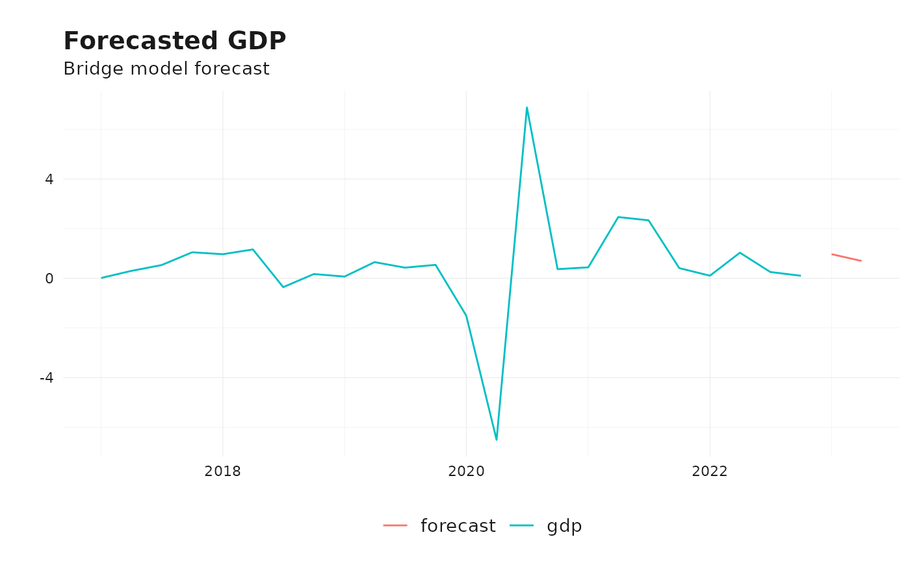

What Are Bridge Models?
Bridge models are statistical tools designed to address the mismatch in frequency between economic indicators and a target variable, such as GDP. For instance, GDP is typically reported quarterly, while many relevant indicators (e.g., industrial production, survey data) are available monthly or even daily. Bridge models “bridge” this gap by converting high-frequency indicators into a form that aligns with the target variable’s frequency.
These models are widely used in nowcasting and short-term forecasting. They are particularly useful when:
- Data for the target variable is reported with a lag (e.g., GDP is often released with a delay).
- High-frequency indicators provide early signals about the state of the economy.
By leveraging real-time data, bridge models can improve forecast accuracy and provide timely insights.
The Bridge Model Framework
Bridge models exploit the relationship between a target variable, such as quarterly GDP (\(y_t\)), and multiple high-frequency indicators (\(x_{t}^{(i)}\)), which are observed monthly or at even higher frequencies. The primary challenge is to harmonize these different frequencies while preserving the information embedded in the indicators.
Aggregation of Indicators
To align high-frequency indicators (\(x_{t}^{(i)}\)) with the target variable’s frequency (\(y_t\)), a transformation or aggregation process is applied. Let \(K\) represent the number of higher-frequency periods within a single lower-frequency period (e.g., \(K=3\) for monthly data aggregated to a quarter). The aggregation step can be represented as:
\[ \bar{x}_{t}^{(i)} = \sum_{k=0}^{K-1} \omega (k) L^{k/K} x_{t}^{(i)} \]
where:
The lag operator is defined as \(L^{1/3} x_{t}^{(i)} = x_{t-1/3}^{(i)}\)
\(x_{t}^{(i)}\): The value of the indicator \(i\) of period \(t\).
\(\bar{x}_{t}^{(i)}\): The aggregated indicator for period \(t\).
\(\omega (k)\): The weight assigned to the k-th period of the higher frequency data.
In many applications, \(\omega (k)\) is simply an average over the values in the higher frequency periods. Alternative aggregation techniques include taking the last observation (e.g., the last month of the quarter) or applying weighted averages.
The Model Specification
Once the indicators are aligned with the target frequency, the bridge model is typically specified as a linear regression:
\[ y_t = \beta_0 + \sum_{ i } \sum_{p_i=0}^{P^{(i)}} \beta_{p_i} L^p \bar{x}_{t}^{(i)} + \varepsilon_t \]
where:
\(P^{(i)}\): The lags to include for indicator \(i\).
\(\beta_{p_i}\): Coefficients capturing the relationship between the indicators and the target variable.
\(\varepsilon_t\): The error term.
Bridge models also handle cases where some high-frequency indicators are not fully observed at the time of forecasting. In such cases, missing observations for the current period are imputed or forecast using time series models (e.g., ARIMA, ETS). This allows predictions even when recent observations are missing. This combination of aggregation and forecasting ensures that bridge models are versatile tools for dealing with incomplete data scenarios.
A Quick Example
The bridgr package simplifies the construction and
estimation of bridge models. This vignette demonstrates how to use the
package with a quarterly GDP series (gdp) and a monthly economic
indicator (baro).
Loading the Data
For this example, the two follwoing Swiss datasets are used:
-
gdp: Quarterly GDP data. -
baro: Monthly economic indicator data.
# Load libraries
library(bridgr)
library(tsbox)
# Example data
data("gdp") # Quarterly GDP data
data("baro") # Monthly economic indicator
gdp <- tsbox::ts_pc(gdp) # Calculate growth rate
# Visualize the data
ts_ggplot(
ts_scale(ts_c(baro, gdp)),
title = "Quarterly gdp and monthly economic indicator",
subtitle = "Scaled to mean 0 and variance 1"
) +
theme_tsbox()
By visualizing the data,it becomes obvious that the monthly economic indicator (baro) is available at a higher frequency than the quarterly GDP data. Moreover, there is a significant correlation.
Estimating the Bridge Model
# Estimate the bridge model
bridge_model <- bridge(
target = gdp,
indic = baro ,
indic_lags = 1,
target_lags=1,
h=2
)
#> The start dates of the target and indicator variables do not match. Aligning them to 2004-04-01
#> Dependent variable: gdp | Frequency: quarter | Estimation sample: 2004-04-01 - 2022-10-01 | Forecast horizon: 2 quarter(s)Because by calculating the GDP growth rate, there is one observation
less at the beginning of the GDP series. The bridgefunction
detects mismatched starting dates and aligns them to the earliest common
date. The model is then estimated using the specified lags for the
target and indicator variables. The h argument specifies
the number of periods to forecast the lower frequency variable. The
bridge model returns both the dataset the main model was
estimated as well as the forecasted dataset for the indicator
variables.
# Inspect the datasets
tail(bridge_model$estimation_set)
#> # A tibble: 6 × 4
#> time baro baro_lag1 gdp
#> <date> <dbl> <dbl> <dbl>
#> 1 2021-07-01 112. 125. 2.34
#> 2 2021-10-01 104. 112. 0.411
#> 3 2022-01-01 97.4 104. 0.105
#> 4 2022-04-01 94.3 97.4 1.03
#> 5 2022-07-01 90.0 94.3 0.255
#> 6 2022-10-01 90.7 90.0 0.102
head(bridge_model$forecast_set)
#> # A tibble: 2 × 3
#> time baro baro_lag1
#> <date> <dbl> <dbl>
#> 1 2023-01-01 97.4 90.7
#> 2 2023-04-01 99.8 97.4Forecasting
# Forecasting using the bridge model
fcst <- forecast(bridge_model)
forecast <- data.frame(
"time" = fcst$forecast_set$time,
"forecast" = as.numeric(fcst$mean)
)
# Visualize the forecast
ts_ggplot(
ts_span(ts_tbl(ts_c(gdp, forecast)), start = 2017),
title = "Forecasted GDP",
subtitle = "Bridge model forecast"
) +
theme_tsbox()
Summary
# Summarize the information in the bridge model
summary(bridge_model)
#> Bridge model summary
#> -----------------------------------
#> Main model:
#> -----------------------------------
#> Series: gdp
#> Regression with ARIMA(1,0,0) errors
#>
#> Coefficients:
#> ar1 intercept baro baro_lag1
#> 0.2426 -6.4929 0.1615 -0.0917
#> s.e. 0.1213 1.3430 0.0125 0.0121
#>
#> sigma^2 = 0.5625: log likelihood = -81.69
#> AIC=173.38 AICc=174.26 BIC=184.9
#> -----------------------------------
#> Single indicator models:
#> -----------------------------------
#> Series: baro
#> ARIMA(1,0,2) with non-zero mean
#>
#> Coefficients:
#> ar1 ma1 ma2 mean
#> 0.6688 0.5305 0.3316 100.8580
#> s.e. 0.0653 0.0799 0.0753 1.5774
#>
#> sigma^2 = 18.46: log likelihood = -646.14
#> AIC=1302.28 AICc=1302.55 BIC=1319.36
#> Aggregation to low frequency:
#> Using mean over values in corresponding periods.
#> -----------------------------------